iOS app for tracking training
User manual
Everything you need to lay tracks, walk them and follow your training over time.
Last updated: 20 November 2026
01
Getting started
Trax is made for dog handlers who train tracking. You lay the track with your phone in your pocket, drop items along the way, and walk the track with your dog afterwards while the app shows where the track layer went.
- The first time you open the app, you get a short introduction. Tap “Continue” to go through it.
- Tap “Allow location access” and choose “Allow While Using App”.
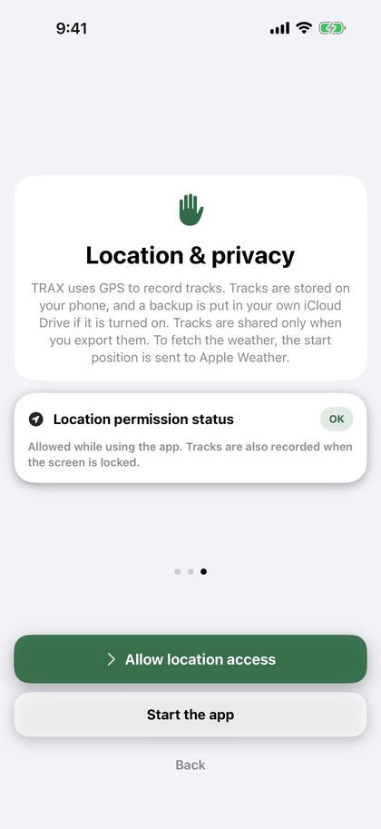
Tip: “While Using App” is enough. Once you have tapped “Start”, tracking continues when the screen is locked or you switch apps, and iOS shows a blue indicator at the top of the screen. You can change access under Settings › Trax › Location on your iPhone.
Trax needs “Precise Location”. Without it, the position can be several hundred metres off. If it is turned off, the app asks for precise location when you lay or walk a track, and shows the card “Precise Location is off” with a link to Settings. Turn on “Precise Location” for Trax there.
Trax and the user manual follow the language of your phone: English, Norwegian (Bokmål), Swedish or German. To use a different language than the phone, choose it under Settings › Language.
02
Home screen
Everything starts here, and this is where you find all your tracks.
The green header shows this month’s figures: the number of tracks, how many km they added up to and the share of items found. At the top right are the paw and the gear. The paw opens the dog page with key figures, goals and progress for each dog (see “Dogs”), and the gear opens Settings. “Import track” and the user manual are in Settings (see “Settings”).
- “Ready to walk” lists tracks that have been laid but not walked yet. They are shown as large map cards at the top, and if you have several, you swipe sideways. The dots below show how many there are. The label on the card shows the status (“Ready”, “Ready in …” while the lie time counts down, or “Walk in progress” if the walk has been started but not stopped) and the lie time, and a bar shows how far the lie time has come. The card also shows the length, the number of items and the dog the track is laid for, for example “for Luna”.
- “Start” on the card takes you straight to the track. Otherwise, tap the card to open the track overview. Press and hold the card and choose “Delete” to delete the track.
- “Recent tracks” lists the three latest completed tracks. Each row has a small map with the track type as a badge, the date, length and dog on one line, and the finds on the right, for example 3/3. The small map shows your route in the same colours as in the track overview: green, orange or red depending on how far from the track it went (see “Deviation from track”). Tap a track to see the details.
- Swipe a track to the left to delete it. “See all” next to “Recent tracks” opens the “Completed tracks” page with all your tracks.
- “New track” is the green button at the bottom, and starts laying a track.
- When a newer version of Trax is in the App Store, the card “New version of Trax” appears below the header. “Update” opens Trax in the App Store, and the cross hides the message until the next version. The app checks at most once a day, and only when you are on the home screen.
- If you updated from a version without the dog page, a bubble by the paw shows “New: Dog page” once. “Show me” opens the dog page, and “Later” closes the bubble. The paw has a “NEW” badge until you have opened the dog page.
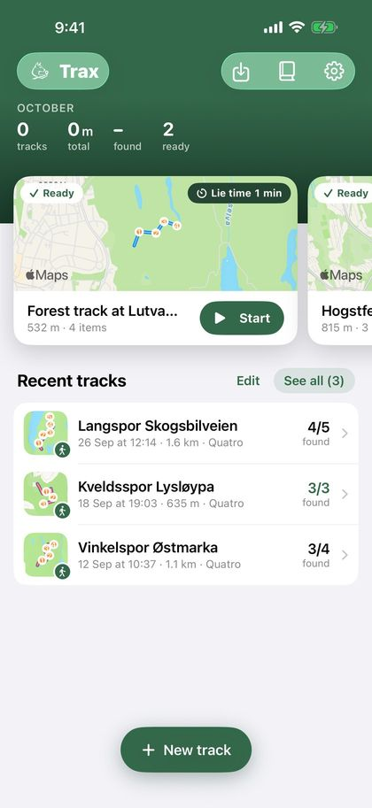
On the “Completed tracks” page the tracks are grouped by month. Swipe a track to the left to delete it.
- If you have registered dogs, buttons appear at the top: “All” and one for each dog, with the dog’s initial in colour. Tracks without a dog are listed under “All”. When you choose a dog, you only see its tracks, and the green row “See analysis for …” opens the dog page for that dog (see “Dogs”). If the dog has no completed tracks, it says “… has no finished tracks yet”.
- Dogs you have deleted keep their button as long as they have tracks. To hide such a dog, press and hold its button and choose “Hide from filter”. You can show it again under Settings › My dogs › “Previous dogs”.
- If the tracks on the page have at least two track types, buttons for the track type appear below the dog buttons: “Track”, “IGP track”, “Blood track”, “Article search” and “Area search”. If there are at least two kinds of track (track, IGP track or blood track), “All tracks” comes first. It only shows tracks. Article search and area search are separate exercises, and are only shown under their own buttons, with their own statistics (see “Search: article and area search”).
- Small icons on the row show whether the track was imported (arrow in) and whether you have exported it (arrow out).
03
Laying a track
As the track layer, you walk the track first while the app records the route with GPS.
- Tap “New track” on the home screen.
- Choose the exercise with the large buttons: “Track”, “IGP track”, “Blood track” or “Search”. “Track” is chosen by default (see “Track type and blood tracks” and “Search: article and area search”).
- The GPS starts as soon as the screen opens. Wait until the GPS dot at the top is green or yellow, then tap the large green “Start” button.
- Walk the track. The route is drawn on the map as you go.
- Tap “Item” to drop an item where you are standing (see “Items”).
- If you need a break, tap “Pause”. Tap “Resume” to carry on. The distance covered while paused is not recorded.
- Press and hold “Stop” when the track is laid. The button fills while you hold it, and the track stops when it is full, so you can't stop the track by accident.
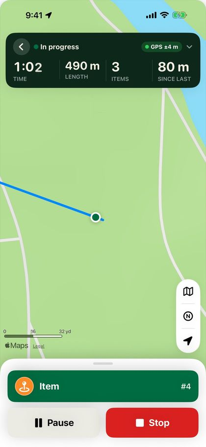
If the GPS signal is weak before you start, a box appears below the panel at the top. Red means you should wait for a better signal, yellow that you can start, but the track will be more accurate if you wait. The box closes by itself when the signal is good, or when you tap “OK, got it”. You can always start.
The panel at the top shows time, length and number of items in large numbers, how accurate the GPS is, and the battery level. A green dot means better than 10 metres, yellow 10–25 metres and red more than 25 metres. “No GPS” means the phone has had no position for more than 15 seconds. Once you have dropped an item, the panel also shows “Since last”: how many metres you have walked since the last item. Tap the panel to see when the track started, when the position was last updated, the coordinate where you are standing and when the last item was dropped.
When you tap “Start”, the map zooms in on you, always to the same view. If you zoom during the track, the map keeps the zoom you chose.
The map buttons on the right are grouped in one capsule. The top button opens the map menu, where you choose “Map”, “Topo” or “Satellite”, and turn “Night mode” on or off (see “Night mode”). Topo is the topographic map from the Norwegian Mapping Authority (Kartverket), with contour lines and paths. It needs internet access, shows “© Kartverket” at the bottom and is only available in Norway. A scale bar in the bottom left corner of the map shows distances. The N button switches the map direction: north up, or a map that turns with the direction you face. Your choice is remembered, and you can also change it under Settings › Map and tracks. The map follows your location dot. If you drag the map, for example to move the corners of a field, the map stops following you and stays where you left it. If you zoom or rotate the map, it keeps following you. The bottom button shows an outlined arrow when the map is not following you. Tap it to centre the map on you again and follow you from there, with the same zoom.
The arrow above the map buttons shows the wind (see “Weather”).
While you lay the track, it is shown on the lock screen and in the Dynamic Island with time, length and number of items. On the lock screen you can tap “Pause” or “Resume”, and “Item” to drop an item without unlocking the phone.
Important: If you tap the back arrow at the top left of the panel before the track is stopped, the app asks whether you want to discard the track or stop and save it. A discarded track cannot be recovered.
04
Track plans
Plan the track on the map before you lay it: legs, items and the length of each leg. Gather the tracks for a training day in a group, so you can see that they don't cross.
Tap “Plans” to the right of “New track” on the home screen, and “+” at the top right for a new plan.
- Tap the map where the track should start, and then where it should turn and end. The length of each leg is shown in the middle of the leg, and the length of the whole track below the map.
- Choose “Item” under “Tapping the map adds”, and tap the track where the items should be. Items snap to the track line and are numbered in order from the start. On blood tracks you can also choose wound bed and game.
- Touch and hold a point or an item and drag it to move it. Tap a point to select it, and “Delete point” to remove it. “Undo” takes back the last change.
- Tap “Save”. Give the plan a name, choose or type a group, choose the track type and add a note for whoever lays the track, if you like. “Save” in the sheet saves the plan and takes you back to the list.
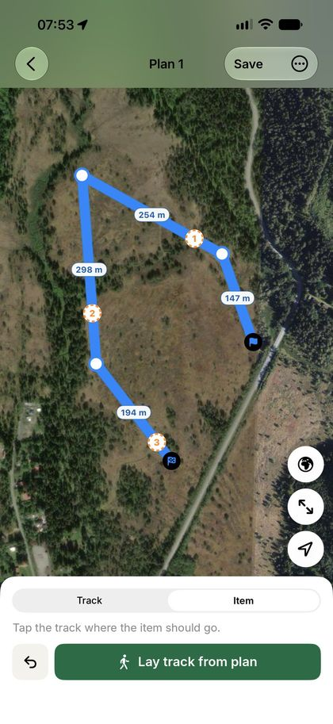
If you tap “Back” before a new plan is saved, the app asks whether you want to discard it. A saved plan is saved automatically as you change it. You change the name, group, track type and note later in the menu at the top right, where you also find “Reverse the track”, “Share plan” and “Delete plan”.
The map starts on satellite. The map button at the bottom right switches between “Map”, “Topo” and “Satellite”, and turns “Show other plans” on or off. Other plans are shown as white dashed lines. If the track crosses another plan, or comes closer than 30 metres, a warning appears below the map.
The list has one card per group. The map at the top of the card shows all the plans in the group, numbered and each in its own colour, and says “No tracks cross” or warns if tracks cross or are too close. Below the map are the plans with length and items, and “Lay” to lay the track. Tap a plan to open it. With ⋯ next to the group name you make a new plan in the group, rename the group or share all the plans in the group. Plans without a group each have their own card at the bottom. Touch and hold a plan to lay the track, share the plan or delete it.
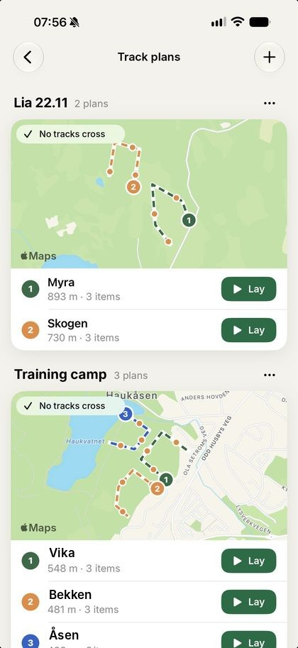
Lay a track from a plan: tap “Lay” in the list, or “Lay track from plan” when the plan is open. “Lay track” opens with the plan’s track type, and the plan is shown dashed on the map with the lengths and items. The other plans in the same group are shown fainter, just so you see where they go. On satellite the plan is orange and the others white. Before you tap “Start”, a card at the top shows the plan’s name, the length, the distance to the start and the note. When the track is saved, the plan’s name is suggested, and the plan is marked “Laid” with the date in the list.
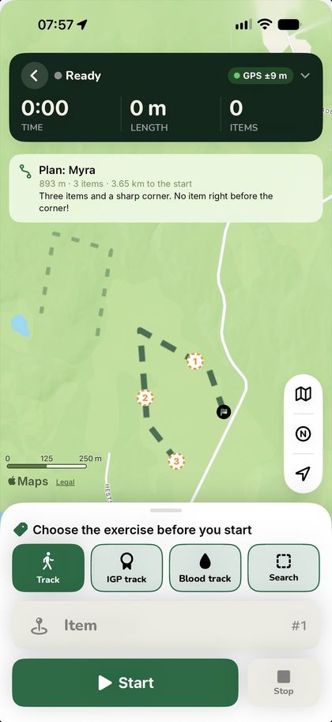
Share plan: “To another Trax user” sends the plan as a file that opens in Trax and ends up in Track plans for the recipient. “As GPX for other map apps” sends the track as a route and the items as waypoints. Plans are included in the backup.
Tip: The plan is a guide. Lay the track to suit the terrain, and use the dashed lines to keep the tracks apart.
05
Track type and blood tracks
Choose whether the track is a regular track, an IGP track or a blood track. Blood tracks have their own buttons and options. Article search and area search are under “Search” (see “Search: article and area search”).
You choose the track type with the large buttons under “Choose the exercise before you start” on the laying screen, before you tap “Start”. You can change it afterwards in the “Track type” card in the track overview. The track type is shown on the track, in the PDF and in the file when you send the track.
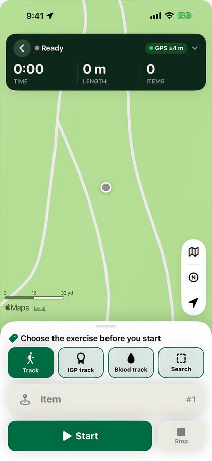
On a blood track, “Item” is replaced by three buttons:
- “Wound bed” places a wound bed where you are standing. It is shown as a dark red drop on the map.
- “Blood stop” marks that there is no blood from here. The button is called “Blood again” while the blood stop lasts. Tap it where the blood starts again. The blood stop is shown as a dashed white line on top of the track.
- “Game” marks where the game lies, with a brown finish flag on the map.
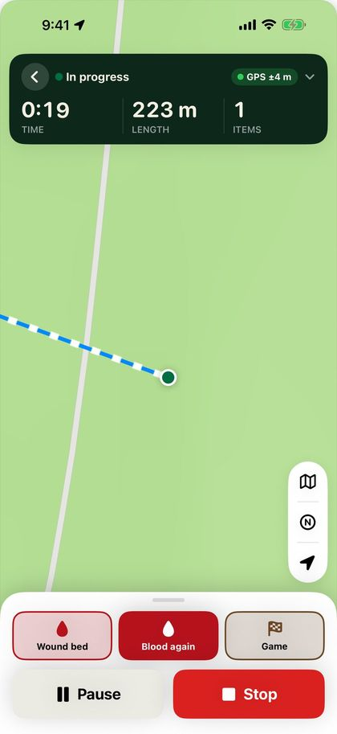
Where the blood track starts, the “Shot site” is shown with an arrow for the flight direction. After “Stop”, and later in the track overview, choose “Flight direction”: “Automatic” (from the first 15 metres of the track), a compass direction or “No arrow”. Turn off “Show flight direction to handler” when the flight direction should not be marked. The shot site and arrow are also shown on a blind track.
In the “Blood and tracking shoe” card you enter the blood amount in dl (optional) and turn “Tracking shoe/hoof” on or off. Below the field you see the blood per 100 metres of track. Less blood per 100 metres makes the track harder. Your last values are suggested next time.
Blood tracks have their own lie time choices, from 30 minutes to 24 hours (see “Lie time”).
When the blood track is walked, wound beds and game count as items. The alert says “Near wound bed” or “Near game”, and the find is recorded as “Wound bed marked as found”. Before a blood stop and before the blood starts again, the app alerts you with “Blood stop” and “Blood again” (see “Alerts and voice alerts”).
The track overview and the PDF list “Wound beds, game and blood stops” with the length of each blood stop, plus the blood amount and tracking shoe. The blood amount is also in the dog report and on the image for social media.
IGP tracks: After “Stop”, and later in the track overview, IGP tracks have the card “IGP training” with four optional fields: “Food” (in every footstep, in every other footstep, scattered, only at the end or no food), “Start” (flag or scent pad), “Corners” (laid naturally or trampled) and “Track layer” (own or stranger’s track). Your last choices are suggested next time. The fields are in the PDF and are included when you send the track. The dog’s progress chart has the option “Food” under “More”, so you can see how the food is reduced over time.
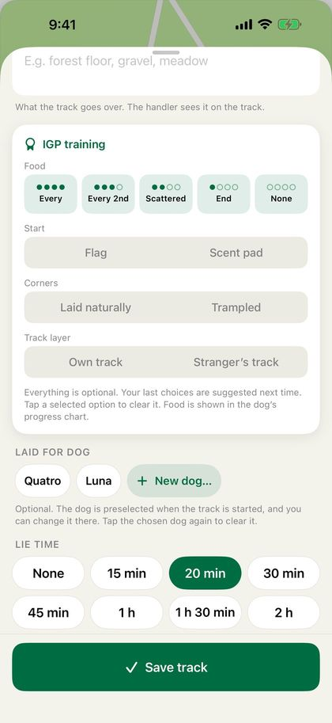
IGP level: When you choose “IGP track” before you start, you also choose a level in the menu that shows the level, for example “IGP 1”: “Free” (no requirements), IGP-V, IGP 1, IGP 2, IGP 3, FH 1, FH 2 or FH 3. The requirements for the level are shown at the top of the menu. While the track is laid, the panel at the top shows “Steps” (e.g. 212/300), the items and the number of steps since the last corner on the leg you are on (“Leg 2”). Tap the panel to see the length in metres. If a corner comes less than 50 steps after the previous corner, or an item is closer than 20 steps to a corner, a warning appears at the top of the map. Corners are found from the GPS and are only registered 5–20 metres after the corner, so the warning comes a little late. After “Stop” the lie time is set to at least the requirement for the level. In the track overview, the card “IGP requirements” shows a green and red checklist: length, corners, distance between corners, items, items clear of corners, crossings by cross tracks (FH 2 and FH 3; one cross track that crosses the track in two places counts as two, and if you used “Crosses here”, those points are what count, see “Cross tracks”), lie time and working time. Lie time and working time are checked once the track has been walked. You can change the level in the menu in the card, and it is shown in the PDF. Steps are converted from metres with the step length under Settings › Map and tracks › “Step length” (0.75 m by default). The warnings can be turned off under Settings › Alerts › “IGP requirements” (under “While laying the track”).
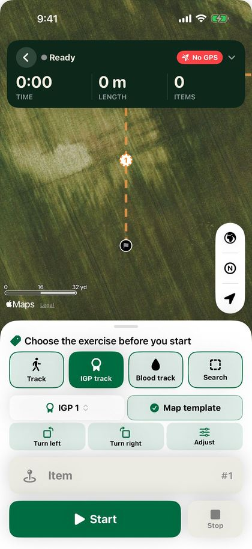
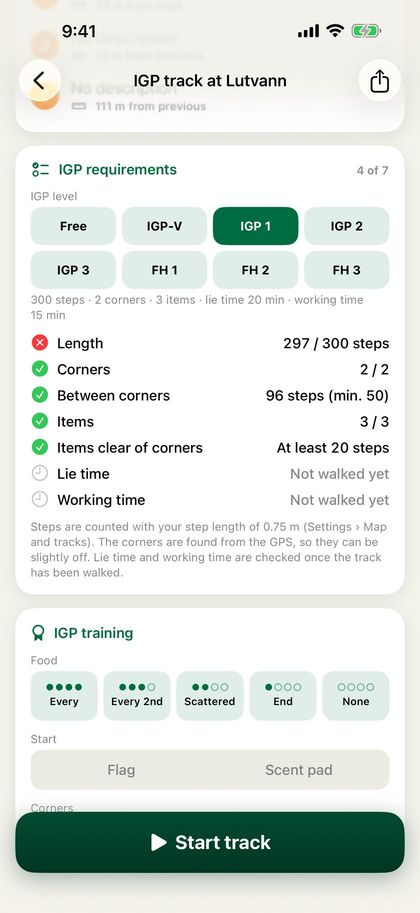
IGP template: Turn on “Map template” next to the level menu, and a template for the level is placed on the map where you stand, as soon as the GPS has found you. The template shows the legs, the corners and where the items should go, and points north. Turn it with “Turn left” and “Turn right” on the row below, or tap and drag ↻ on the map straight away. If you change the level, you get a new template for that level in the same place. When you tap “Start”, the template moves to where you stand.
“Adjust” on the same row opens the “Adjust template” sheet. There you change the length of each leg in steps, and whether each corner turns left or right. The sheet shows how many steps the template has in total, and tells you if it becomes shorter than the requirement for the level. The items are placed in the middle of the legs and the last one at the end, at least 20 steps from the corners, and move along when you change the legs. “Reset” gives you the template for the level again.
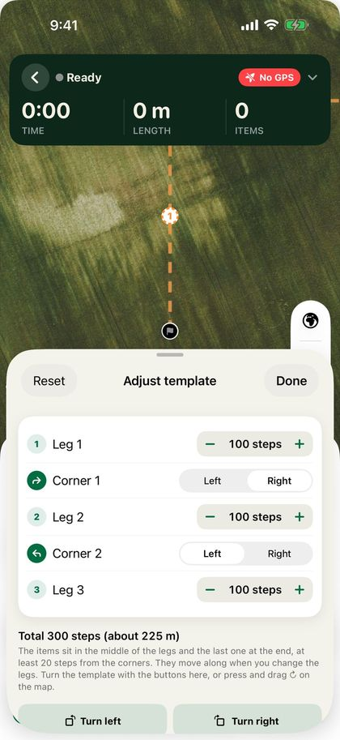
While you lay the track, the card at the top of the map shows what comes next, for example “Right corner in about 20 steps” or “Place item 2 now”, and how far you have come on the leg, for example “Leg 2 · 40 of 100 steps”. Before corners and items you feel a small tap, and with “Read alerts aloud” on, the message is read out. You turn off the tap and the read-out under Settings › Alerts › “IGP template guidance”. The card is shown either way.
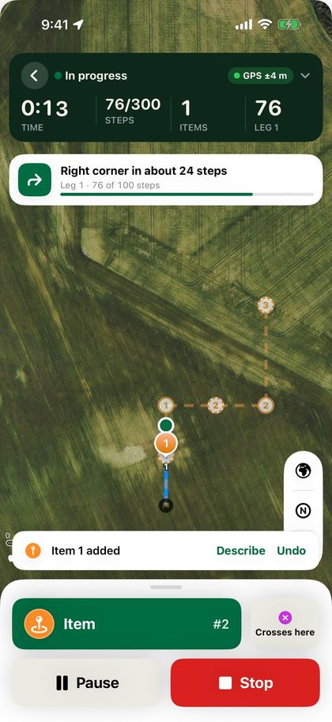
Tip: The template is a guide, not the answer. Steps are worked out from the length the GPS measures, divided by your step length, and the GPS can be off by a few metres. Go by the terrain and your own steps.
06
Search: article and area search
Search exercises are not tracks. You place a field or an area on the map and put out articles or people, and the dog searches within a time limit.
- Tap “New track” and then “Search”. Choose “Article search” or “Area search”. Your choice then takes the place of the “Search” button, and you can tap it again to change.
- The field (or area) is placed on the map where you are standing, with the start line where you are. If the weather has been fetched, it is turned so the dog is sent in against the wind. Otherwise it faces north.
- Choose the size in the menu on the left: article search has “Field 50 × 50 m” and “Corridor 10 × 50 m”, area search has “Area 100 × 100 m” and “Area 100 × 200 m”. You can also choose the width and length yourself.
- Choose the time limit in the menu on the right. The default is 15 minutes for article search and 1 hour for area search. The choices are remembered separately for article search and area search.
- Adjust the position with the buttons below: “Turn left” and “Turn right” turn the field a little at a time, “Into wind” turns it into the wind, and “Start here” moves the start line to where you are standing.
- Tap “Start” when the field is in the right place. The buttons for size, time and position then disappear.
- Walk into the field and tap “Item” where you put each article. In area search there is also a “Person” button for placing a person where you stand.
- Tap “Stop” and save as usual.
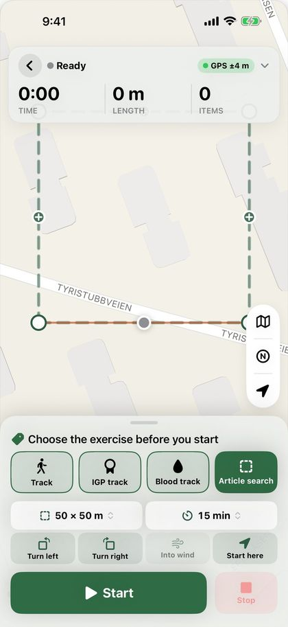
The field does not have to be rectangular. Drag the corners to move them, and drag the + in the middle of an edge to make a new corner. You do not need to tap the corner first, and the field is redrawn while you drag. Tap a corner to bring up the bin that removes it. The corners on the start line cannot be removed. Once the shape is changed, the size menu says “Custom shape”, and “Back to rectangle” in the same menu undoes it. You can change the shape until you tap “Stop”.
When the dog is going to search, open the search from “Ready to walk” and tap “Start”. “Walk blind” is already on, since the handler usually does not know where the articles are (see “Blind tracks”). The panel at the top shows the time left, the time used and the number of finds. The phone alerts you one minute before the time is up and when the time is up, with vibration, and with speech if “Read alerts aloud” is on. When the time is up it says “Over time”, and the clock keeps running.
Tap “Found” when the dog brings an article or indicates a person. The app asks which article the dog found, and the time since the search started is saved with the find. Your distance does not matter, since you usually stand by the field while the dog searches. Then you can choose the indication: on article search “Down”, “Sit”, “Stand”, “Retrieve” or “Passed”, and on area search “Passive alert”, “Bringsel” or “Bark alert”, for both people and articles (see “Recording finds”).
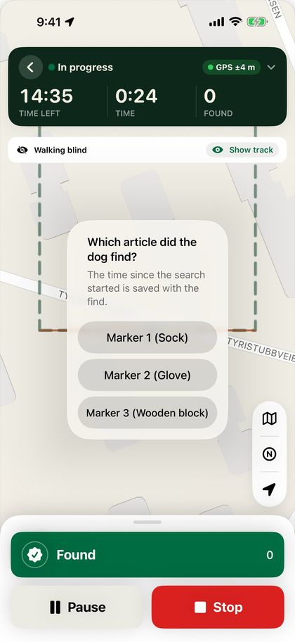
Searches have no track alerts, deviation analysis or corners. On the map, the route of the person who placed the articles is thin and faded, and in article search the handler’s route is not shown.
The result in the track overview shows the size of the field, the time limit, the time used and each find with the time it took, in the order the dog found them. In area search, people and articles are counted separately. Articles that were not found are listed below.
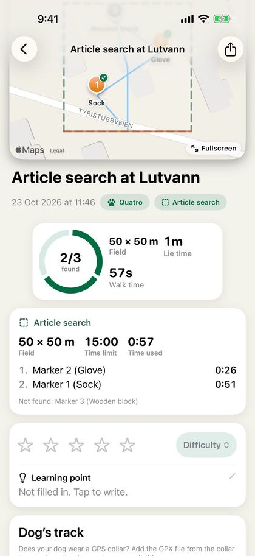
Tip: Article search, area search and tracks are always kept apart in the statistics. “All tracks” on the “Completed tracks” page only shows tracks, and the dog page shows “Count” for searches instead of “tracks in total”, without “on track”.
07
Items
- Stand where the item is placed and tap “Item”. The item is saved at once, with a number and position.
- To add a description, for example “sock” or “wooden block”, tap “Describe” in the message that appears.
- Tapped by mistake? Tap “Undo” in the message.
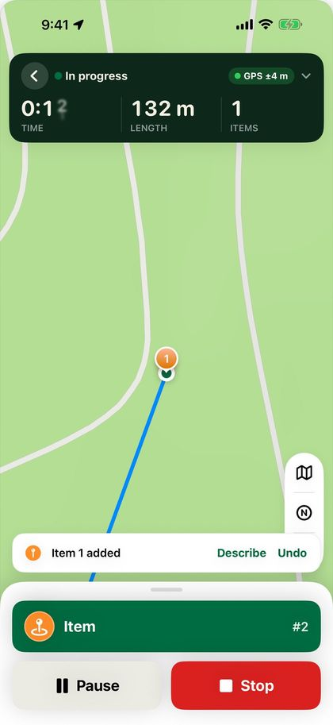
Items are numbered in the order you drop them. You can also write or change the description later in the track overview, under “Items”.
Choose the colour and icon for items under Settings › Map and tracks. Your choice applies to all maps, also in the PDF and on the image for social media.
Tip: If the phone has not found your position yet, the item is not saved. Wait a few seconds until the track starts being drawn, and try again.
08
Saving the track
When you tap “Stop”, the “Save track” sheet opens. At the top you see the length, the number of items and the time.
- “Save track” stays at the bottom of the sheet. It saves the track and takes you back to the home screen, where the track is listed under “Ready to walk”.
- “Export” lets you choose Trax file, GPX or PDF. Choose “To another Trax user” to send the track to the handler, or “To another Trax user, blind” if the handler should not see the track (see “Sharing and receiving tracks”). When you have finished exporting, you are back in the sheet with everything you filled in, and you tap “Save track”.
- “Continue track” takes you back to the map if you tapped “Stop” too early.
You can give the track a name. If you leave the field empty, the track is named after the place where it started, the date and the time, for example “Byneset Oct 25, 8:15 AM”. Without internet access, it gets the date and time instead.
Under “Surface” you can write what the track goes over, for example forest floor, gravel or meadow. The handler sees the surface on the track, also when you send it to another phone.
Under “Lie time” you tap the button for how long the track should lie before the dog walks it (see “Lie time”). On a blood track, the “Shot site” and “Blood and tracking shoe” cards are also shown (see “Track type and blood tracks”).
Under “Laid for dog” you can choose which dog the track is laid for. It is optional, and “No dog” is the default. The dogs are shown as buttons, and the chosen dog is green. Tap the chosen dog again to clear it, or “New dog…” to add a dog. The dog is shown on the card under “Ready to walk” and as the “For …” badge in the track overview, where you can also change it. When the track is started, the dog is already chosen, but you can switch. The dog is included when you send the track as a Trax file, and is matched to the dog with the same name on the receiving phone.
Under “Training elements” you choose what the track should train (see “Training elements”).
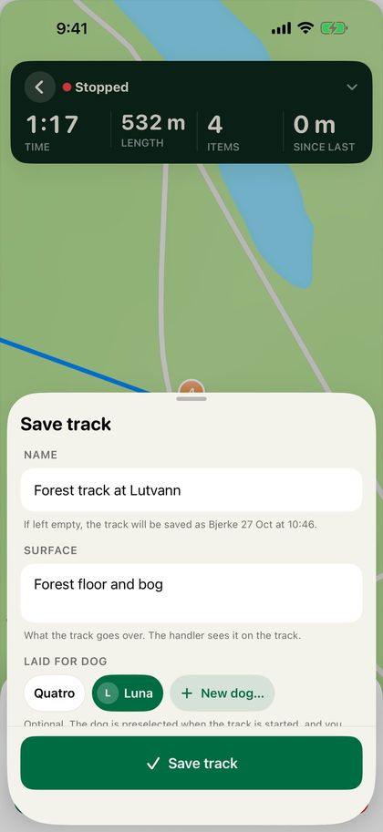
09
Lie time
Lie time (track age) is the time from when you started laying the track until the handler starts walking it. It counts up by itself and is shown both while the track is waiting and while it is being walked. When the track has been walked, the lie time is locked and saved with the track.
To be told when the track has lain long enough, choose a lie time with the buttons in the “Save track” sheet: “None”, 15, 30, 45, 60 or 90 minutes, 2 hours, or “Custom …” with hours and minutes (up to 48 hours). Your last choice is remembered. On blood tracks the choices are 30 minutes and 1, 2, 3, 6, 12, 18 and 24 hours, and blood tracks remember their own choice.
The first time, the phone asks whether Trax may send notifications. Five minutes before the lie time is up, you get the notification “The track “…” is ready in 5 min (lie time 30 min). Get the dog ready.” The lock screen and the Dynamic Island count down, then show “Track is ready” with the track age until the track is started. Tap the notification or the countdown to open the track.
A lie time over 8 hours has no countdown on the lock screen, only the notification before the track is ready.
For tracks that are waiting, the track overview shows the lie time in large figures, with the goal and how far it has come. Tap the card to change the lie time or choose “None”. The notification and countdown disappear when the track is started or deleted.
Tip: The notification is time sensitive and gets through Focus modes such as Sleep when “Time Sensitive Notifications” is on for Trax. If notifications are turned off for Trax, the card tells you, with a button to Settings.
10
Cross tracks
A cross track is a fresher track that crosses the main track, to train the dog to stay on the right track.
- Lay the main track as usual and save it.
- Open the track from “Ready to walk” on the home screen and tap “Lay cross track” in the “Cross tracks” card.
- The main track is shown faintly on the map. Tap “Start” and walk across the main track. “Pause” and “Stop” work as when you lay a regular track, but cross tracks have no items.
- Tap “Stop”. You can enter who laid the cross track under “Laid by”. Then tap “Save cross track”.
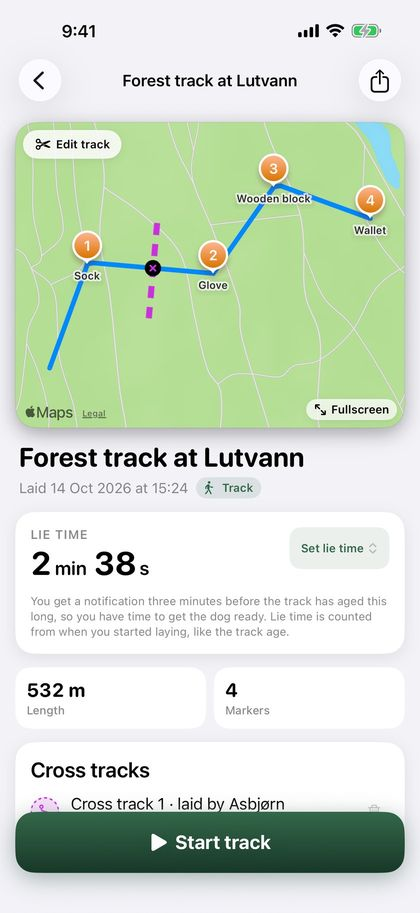
Cross tracks are shown dashed in their own colour, with a small cross mark where they cross the main track. The card shows the length and the cross track’s own lie time. You can lay several cross tracks, and delete one with the bin before the track is walked. Article search and area search have no cross tracks.
“Crosses here”: When you lay an IGP track, the “Crosses here” button is next to “Item”. Tap it where the cross track will cross the track, for example where you put a track flag. The point counts as a crossing in “IGP requirements” (FH 2 and FH 3), not as an item, and is shown with a crossing mark on the map, also while you lay the cross track. Once you have used “Crosses here”, these points are what count and give alerts, not the crossings the app finds from the GPS. The crossings are listed in the “Cross tracks” card and can be deleted while the track is waiting.
When the dog walks the track, the app alerts you 12 metres before each crossing with “Crossing track” (see “Alerts and voice alerts”). Cross tracks are also shown in playback, in the PDF and on the image for social media, and are included when you send the track. On a blind track they are hidden until the track is stopped.
11
Walking a track
As the handler, you walk the track with your dog. The track layer’s route and the items are shown on the map, and your own route is drawn in a different colour.
- Tap “Start” on the track under “Ready to walk” on the home screen. You can also open the track and tap “Start track” at the bottom.
- Choose the dog that will walk the track. The dogs are shown as buttons, and the chosen dog is green. If the track is laid for a dog, or you only have one dog, it is already chosen. “New dog…” at the end adds a new dog and chooses it right away. If you have not registered any dogs, you can start without one.
- To walk without seeing the track, turn on “Walk blind” (see “Blind tracks”).
- Tap “Start”.
- Follow your dog. Use “Pause” and “Resume” when needed.
- Tap “Found” when the dog indicates an item.
- Press and hold “Stop” when the track is done.
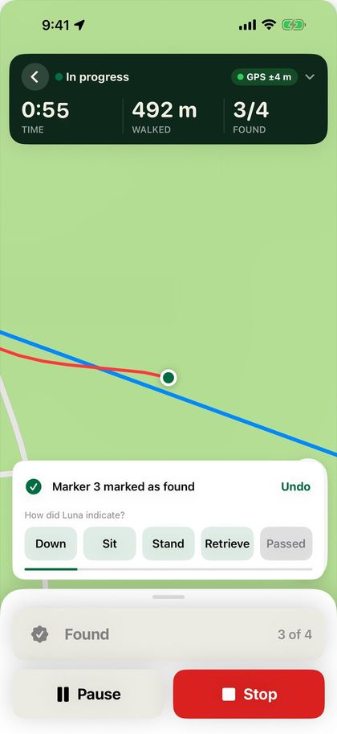
Before you start, the panel at the top shows how old the track is, how long it is and how many items it has. While walking, it shows time, how far you have walked and how many items have been found. Tap the panel to see the lie time. If the GPS signal is weak, the same box is shown as when you lay a track.
When you tap “Start”, the map zooms in on you, to the same view every time. The map follows you as you walk, and if you zoom in or out, the map keeps the zoom you chose. The map menu at the top of the map buttons has the standard map, topo (Norway only), satellite and night mode, and the N button switches between north up and a map that turns with your direction. The arrow above the map buttons shows the wind when the dog started the track.
If you get too far from the laid track, the phone vibrates and the “Track lost” card appears at the top with how far away you are. The card disappears when you are back on the track, or when you tap the cross. Read more about this and the other alerts in “Alerts and voice alerts”.
Recording continues when the screen is locked or you switch apps. The walk is shown on the lock screen and in the Dynamic Island, and on the lock screen you can tap “Pause”, “Resume” and “Found”.
If you tap the back arrow after you have started, the app asks “End the dog track?”. You can stop and save, pause the walk or choose “Discard dog track”. A paused walk continues when you open the track again. “Discard dog track” only deletes what you have walked. The track that was laid stays under “Ready to walk”.
If the app stops in the middle of a walk, for example because the phone ran out of battery, the walk has been saved along the way. The track is listed under “Ready to walk” with “Walk in progress”. Open the track and tap “Continue”, and the walk continues from pause. The time the app was stopped is not counted in the time spent.
12
Blind tracks
Walk the track without seeing where the track layer went, as in a trial.
Turn on “Walk blind” before you tap “Start”. The switch is off when you open the track, so you turn it on each time. If the track was sent to you blind, it is already on (see “Sharing and receiving tracks”).
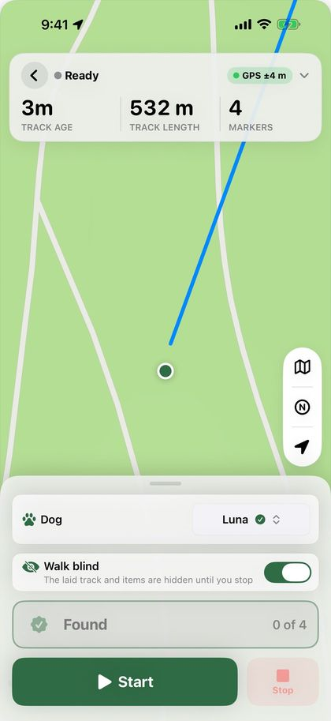
- The laid track, items, blood stops, cross tracks and corners are hidden on the map until you tap “Stop”. The start is shown as a green drop with an orange paw, and the shot site and flight direction on a blood track are still shown.
- You get no alerts along the way, for items, blood stops, track loss or crossing tracks, and items are not read aloud.
- The panel at the top only shows how many items have been found, not how many there are.
- “Found” records the nearest item, however far away it is.
If you need to see the track, for example because you have lost your way, tap “Show track”. Everything is then shown, and the track no longer counts as blind.
The track overview and the PDF show “Walked blind”, and when the track was shown if you tapped “Show track”.
13
Night mode
When you train in the dark, night mode makes the screen dark and red, so your night vision is not ruined.
- Tap the top map button on the right of the map while you lay or walk a track.
- Turn on “Night mode” in the menu.
- Turn it off the same way.
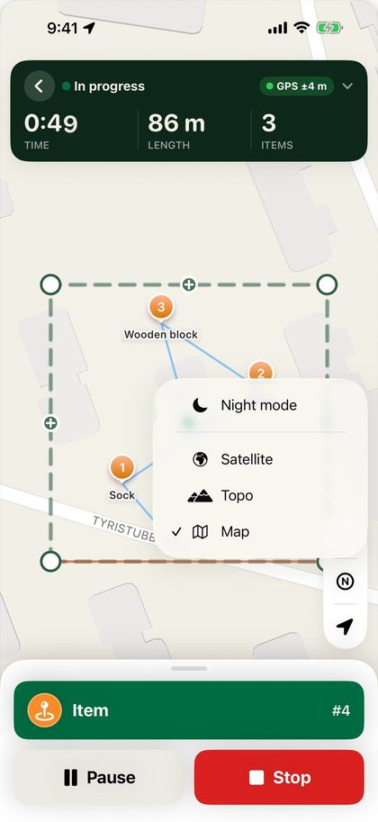
Night mode makes the whole screen red and dark: the map, the panel at the top and the buttons. The track, the position dot and the buttons are shown in light red, so they are easy to see. Your choice is remembered until the next time you lay or walk a track. The rest of the app looks as usual.
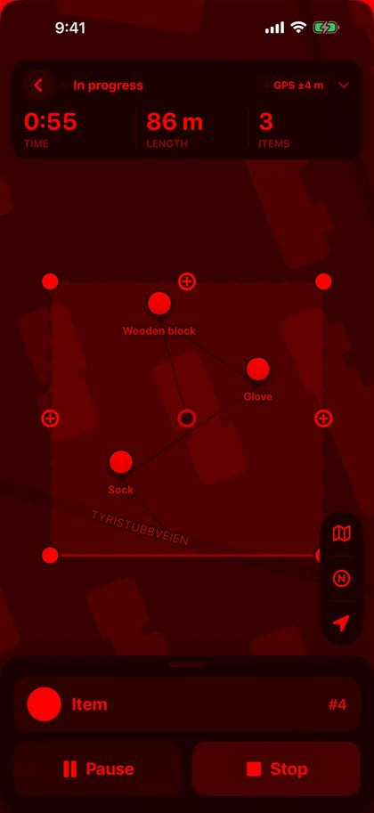
Tip: Turn down the screen brightness as well. Night mode changes the colours, not how bright the screen is.
14
Recording finds
When you come within the chosen distance of an item (12 metres by default), a banner shows its number, description and distance. The phone vibrates, also with the screen locked. If GPS is inaccurate, the app waits with the alert until the position is better. You choose the distance and alert type under Settings › Alerts (see “Alerts and voice alerts”).
- Tap “Mark as found” in the banner, or the large “Found” button at the bottom. Choose “Later” if you want to wait.
- If you do not tap anything, the banner closes by itself once you are some way past the item (25 metres, or twice the chosen distance if that is further), or when you get close to the next item. The item is then not recorded as found, but you can tick it off when you stop.
- “Found” can only be tapped when you are within the chosen distance of an item that has not been found yet, both in the app and on the lock screen. If no banner is shown, the nearest one is recorded.
- Tapped by mistake? Tap “Undo” in the message that appears at the bottom.
If you want finds to be recorded by themselves, turn on “Mark finds automatically” under Settings › Map and tracks › Finds. The item is then marked as found when you have been within the “Distance to marker” (3, 5, 8 or 12 metres, 5 metres by default) with a good GPS signal. The phone vibrates, and you can tap “Undo” right away. When you stop, you can correct found and not found. This does not apply to blind tracks and searches.
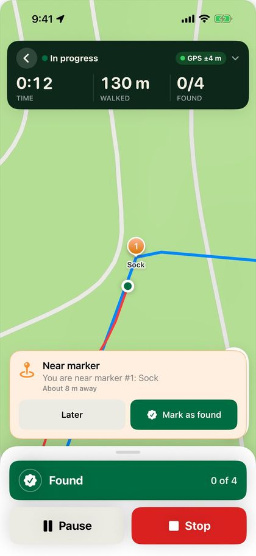
When you stop, the “Walk completed” sheet shows a list of the items. Finds you recorded along the way are already ticked. Correct anything that is missing.
Correcting finds afterwards: If the dog found an item that was not recorded, you can correct it after the track has been saved. Open the track, go to the “Items” tab and tap the item. Under “Result”, choose “Found” or “Not found”, and the indication if it was found. You can also hold your finger on the item and choose “Mark as found” or “Mark as not found”. The number of finds, the dog page, the PDF and the image for social media are updated straight away.
Indication: On tracks, IGP tracks and article searches, the message after “Found” has five buttons: “Down”, “Sit”, “Stand”, “Retrieve” and “Passed” (the dog went past and you showed it the article). On area search the choices are “Passive alert”, “Bringsel” and “Bark alert”, for both people and articles. Tap the one that fits, or leave it. The message stays for about 10 seconds. Finds from the lock screen and finds recorded automatically can be given an indication when you stop. In the track overview, the indication is shown after “Found” on each item, with a summary at the top of the card. Tap an item to change it. The indication is also in the PDF, and the dog’s progress chart has the option “Indication” under “More”, with one bar per track.
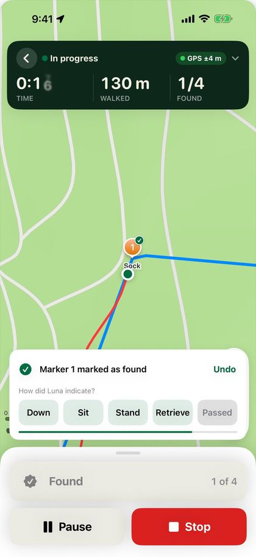
False indication: On IGP tracks there is a separate button, “False indication”, next to “Found”. Tap it when the dog indicates where there is nothing. The time and position are saved, and a red mark is shown on the map. Tapped by mistake? Tap “Undo” in the message, or “Remove” when you stop. False indications are shown in the track overview, in the PDF and as red numbers in the “Indication” chart.
In the same sheet you can give the track an assessment (see “Assessment and corners”). In the learning point you write what you want to remember from the track, for example what went well or what needs more work. It is included in the PDF. If the track layer left the surface empty, you can fill it in here. Tap “Save” when you are done.
“Export” in the same sheet shares the track as a Trax file, GPX or PDF right away. Afterwards you are back in the sheet with everything you filled in. To show off the track, tap “Share on social media” (see “Share on social media”).
Tip: To walk the track without alerts and without seeing it, turn on “Walk blind” before you start (see “Blind tracks”).
15
Alerts and voice alerts
While the dog walks the track, the phone can alert you with vibration, sound and voice. All alerts are set under Settings › Alerts.
- “Marker nearby”: when you are within the “Marker distance” (5–50 metres, 12 metres by default). On a blood track this applies to wound beds and game.
- “Blood stop” and “Blood resumes” (blood tracks): before you reach a blood stop, and before the blood starts again after it. Choose the distance under “Distance to blood stop” (20 metres by default).
- “Track loss”: when you have been further from the laid track than the “Distance from track” for a while (5–30 metres, 15 metres by default). The app does not alert until you have been on the track once.
- “Crossing track”: 12 metres before each place where a cross track crosses the track, or where the track layer tapped “Crosses here”. Crossings close together give one alert.
- “IGP requirements” (while laying the track): when a corner comes less than 50 steps after the previous corner, or an item is placed closer than 20 steps to a corner. Applies to IGP tracks with a level chosen (see “Track type and blood tracks”).
- “IGP template guidance” (while laying the track): a small tap before corners and items when you lay the track by a template, and a read-out when “Read alerts aloud” is on.
All of these are on by default. The main “Alerts” switch at the top turns all alerts on and off, including voice alerts. Alerts also appear on the lock screen. On a blind track no alerts are given. Changes to blood stop, track loss and crossing track apply the next time you start a track.
The page has four groups: “While the dog tracks” (item nearby, track loss and crossing tracks), “Blood tracks” (blood stop and blood resumes), “While laying the track” (IGP requirements) and “Sound and voice” (alert type and reading out the distance).
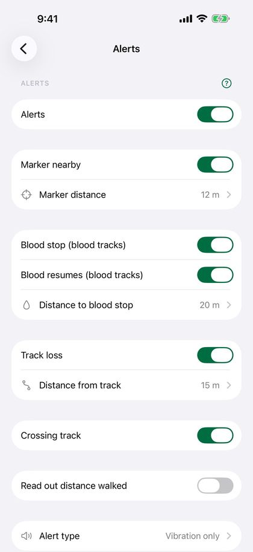
Under “Alert type” you choose “Vibration only” or “Vibration and sound”. The sound only plays when the phone is not on silent or in Do Not Disturb.
Voice alerts: turn on “Read alerts aloud” under “Alert type”. The phone then reads out all the alerts you have turned on, for example “Marker 3, about 11 metres away”, “Blood stop in 20 metres” or “Track lost, about 18 metres from the track”. Tap “Play example” to hear the voice. Voice alerts play in AirPods or the speaker, also with the screen locked and when the phone is on silent. Music is lowered while the message is read.
If you turn on “Read out distance walked” under Alerts, the phone also reads out how far you have walked, for example “300 metres walked”. Under “How often” you choose every 100, 200 or 500 metres, or every km. This only applies when “Read alerts aloud” is on.
Tip: With AirPods in your ears you hear the voice alerts without taking out the phone, and the dog is not disturbed by sound from the speaker.
16
Track overview
Tap a track on the home screen to see everything about it.
- The map at the top shows both routes and all items, with the track in the middle of the map. You can drag and zoom the map. Tap the map, or the fullscreen button at the top, for a larger map. In fullscreen, the map button at the bottom right switches between the standard map, topo and satellite. Fullscreen always opens on the standard map.
- On completed tracks the playback bar is at the bottom of the map, so you can play back the walk right there (see “Playing back the walk”). The badge at the top left of the map shows the deviation colours and the limit. Tap it to change the limit (see “Deviation from track”).
- If the track has an image, a small picture of it sits at the top right of the map. Tap it to see the image, and “Map” to go back (see “Share on social media”).
- The buttons at the top are fullscreen, the share button and ⋯. The share button exports the track as a Trax file, GPX or PDF, and creates the image for social media for completed tracks. ⋯ has “Rename”, “Edit track”, “Play back walk” and “Delete track”.
- Below the map is the title, and on completed tracks the finds in a ring, for example 4/4. The key figures are in one row: the length, the lie time, the time spent and how much of your route was on the track. For searches the size of the field is shown instead of the length.
- The dog and the track type are shown as badges below the title. Walked with the wrong dog, or forgot to choose one? Tap the dog badge and pick another dog or “No dog”, or “New dog…” to add one. While the track is waiting, the “For …” badge shows the dog the track is laid for. Tap it to change or remove the dog.
- Completed tracks have the tabs “Overview”, “Deviation”, “Items” (“Blood track” on blood tracks) and “Conditions”. The tabs stick to the top when you scroll. Searches have no “Deviation” tab.
- “Overview” has the IGP requirements on IGP tracks and the result on searches, “Assessment” and “Training elements”, and a row for each of the other tabs with a short summary, for example “4 of 4 found”. Tap a row to go to the tab. Further down are the notes, “Track type” and “Details”.
- “Deviation” has the “Deviation from track” card, the chart “Deviation along the track” and the “Dog’s track” card (see “Deviation from track” and “Dog’s track from a GPS collar”).
- “Items” shows each item with its description and result, and how many metres it is from the start and from the previous item. Tap an item to write or change its description, or to correct whether it was found (see “Recording finds”). On a blood track the tab is called “Blood track”. It has the “Wound beds, game and blood stops” card, as well as the shot site and blood and tracking shoe.
- “Conditions” has “IGP training” on IGP tracks, the weather, the surface and the cross tracks.
- On the map, found items get a small green tick in the corner and keep their colour and symbol, so you can see whether it was a wound bed or game. Items that were not found are grey. The handler’s route is coloured by how far from the track it went (see “Deviation from track”), and in IGP tracks small numbered circles show the corners (see “Assessment and corners”).
- Tracks that are waiting have the same map and title, but no tabs. Below the title are the lie time with a countdown and the key figures length, items and weather. The cards are on one page that scrolls, and “Start track” stays at the bottom of the screen. This is also where you find the “Cross tracks” card (see “Lie time” and “Cross tracks”).
- “Details” shows “Laying started”, “Laying finished”, “Walking started” and “Walking finished”, the number of corners (IGP tracks) and whether the track was walked blind. Tap “Rename” to give the track a new name.
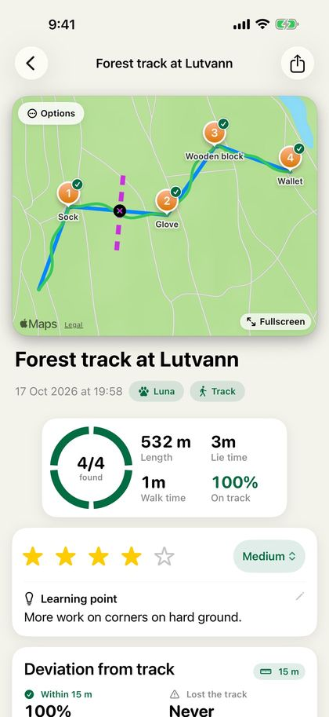
17
Assessment and corners
Give each track an assessment, and see how many corners the IGP track had.
The “Assessment” card is in the “Walk completed” sheet and on the “Overview” tab in the track overview. Everything is optional:
- “Rating”: 1 to 5 stars.
- “Difficulty”: “Easy”, “Medium” or “Hard”.
- “Learning point”: one line on what went well, or what needs more work.
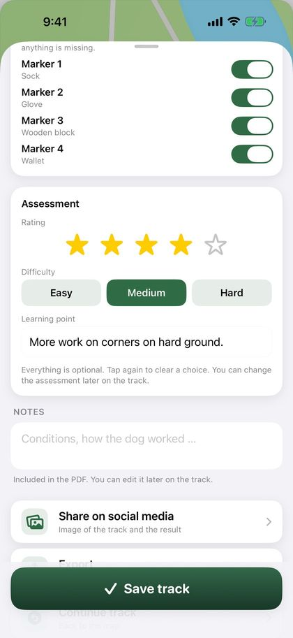
Tap the chosen star or difficulty again to clear it. In the track overview, the difficulty is a small menu button on the same line as the stars. Tap the stars to change the rating, the menu button to choose a difficulty or “None”, and the learning point to write it.
The dog’s progress chart has the option “Rating”, with the points coloured by difficulty: green is easy, orange medium and red hard. The PDF shows the rating and difficulty, and the learning point in its own section. The dog report has the average rating on the cover page. The assessment is included when you send the track as a Trax file.
Corners: In IGP tracks, Trax counts the corners in the laid track by itself, where the track turns at least 45 degrees. Small bends and GPS noise are not counted. “Details” in the track overview shows “Corners”, and the map has small numbered circles at each corner. The PDF has the row “Corners in track”. Other track types get no corners. Tracks under 30 metres get no corners either, and on a blind track they are hidden until the track is stopped.
18
Training elements
Choose what the track should train, and assess each element once the track has been walked.
The “Training elements” card is in the “Save track” sheet after the track has been laid, below the lie time. The first time, the list is empty. Tap “New element”, enter a name, for example “Sharp corner” or “Article on a steep slope”, and tap “Add”. The element is chosen right away and remembered for the next track. Tap an element to choose it or clear it.
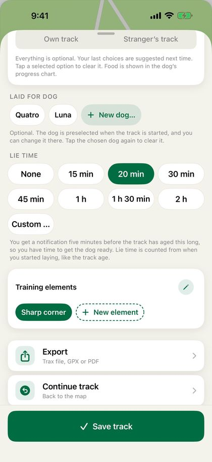
To tidy the list, tap the pencil at the top right of the card. Each element then gets a red cross that deletes it from the list. Tap “Done” when you are finished. Tracks that already have the element keep it.
When the track has been walked, you assess each chosen element as “Good”, “Fair” or “Poor” in the “Walk completed” sheet, above “Assessment”. Tap again to clear a choice. The card is only shown when the track layer chose elements.
In the track overview you can choose elements while the track is waiting, and assess them once it has been walked. If no elements were chosen before the track was walked, the card is not shown. On tracks sent blind, the elements are hidden until the track has been walked.
On the dog page, the “Training elements” box shows one bar per element, for example “7 of 9 good”. The box is only shown when the dog has assessed elements (see “Dogs”).
The elements are in the PDF, are included when you send the track as a Trax file, and are part of the backup. Article and area searches have no training elements.
19
Playing back the walk
See how the dog worked, on top of the track that was laid.
- Open a completed track. The playback bar is at the bottom of the map at the top of the page.
- Tap the green play button. A green drop with an orange paw shows where you and the dog were, and the route is drawn as it goes.
- Drag the timeline to jump forward or back. The marks on the timeline show the finds and where you lost the track, and the time is shown next to it.
- Tap the speed button to play 5, 10, 30 or 60 times faster than real time.
For a larger map, tap the fullscreen button at the top, or choose “Play back walk” in the ⋯ menu. Playback in fullscreen continues where it was on the map.
Items get a green tick when they are found. On older tracks, where the time of the find was not saved, the item is found where the dog came closest to it.
20
Dog’s track from a GPS collar
Does your dog wear a GPS collar, for example from Garmin or Tractive? Add the GPX file from the collar to see where the dog went compared with you and the track.
- Export the outing as a GPX file from the collar or the collar’s app, and save it in Files or AirDrop it to the phone.
- Open the completed track, go to the “Deviation” tab and tap “Add dog’s track” in the “Dog’s track” card. For searches the card is on “Overview”. Choose the GPX file.
- If the file has several dogs, choose the one that ran the track. The dog with the same name as on the track is at the top.
You can also open the GPX file directly from Files or AirDrop. If the times in the file match a track you have walked, Trax asks “Is this the dog’s track?”. Tap “Add dog’s track”, or “Import as new track” if the file is an ordinary track.
Trax only uses the part of the file from when you walked the track, with two extra minutes at each end. The rest of the outing is left out. The file must be from the same track: if the times don’t match, you are told so.
If the track has no dog and the dog in the file has the same name as one of your dogs in Trax, the track gets that dog, so it shows up under the right dog in “Completed tracks”. A dog you have already chosen is never replaced.
The “Dog’s track” card shows the length of the dog’s track and how far the dog was from you at most. “Show on map” hides or shows the dog’s line. “Replace” chooses a new file, and “Remove” deletes the dog’s track without touching the rest of the track.
In “Play back walk” the dog is shown as an orange drop with a green paw and you as a green drop with a walking figure, and below the timeline you see how far the dog was from you at that moment. The dog’s track is also on the map in the PDF and is included when you send the track to another Trax user.
Tip: If the file has no times, the dog’s track is shown on the map, but not in playback.
21
Editing a track
Trim the start or end of a track, for example a long tail because you forgot to tap Stop.
- Open the track, tap ⋯ at the top and choose “Edit track”.
- If the track has both the layer’s and the handler’s track, choose which one to trim at the top. You can trim both before you save.
- Drag the handles below the map: the left one is the new start, the right one the new end. The part being trimmed turns grey on the map. Use the arrows to move one point at a time.
- Tap “Save”. Length, duration and lie time are recalculated, and the deviation from the track follows.
If there are items or finds in the part being trimmed, the app asks whether to move them to the nearest point or remove them. A find that is removed counts as not found.
Important: The trim cannot be undone once you have saved. The points that are trimmed away are deleted.
22
Deviation from track
See how closely the walk followed the track that was laid.
The “Deviation from track” card is on the “Deviation” tab in the track overview for completed tracks. It shows:
- How much of the walk was within the limit for “on track”.
- “Lost the track”: how many times the handler was outside the limit for at least 20 metres in a row (or twice the limit if that is longer), and how far into the track it first happened.
- Average deviation and largest deviation.
Below the card, the chart “Deviation along the track” shows how far the handler was from the laid track throughout the walk. The marks at the bottom show when the items were found.
Choose the limit with the button at the top right of the card, or with the badge at the top of the map: 5, 10, 15, 20 or 30 metres. The default is 15 metres. Your choice is remembered and also applies to the PDF and to “on track” on the dog page. The track loss alert while you walk has its own limit under Settings › Alerts.
On the map, in fullscreen and in playback, the handler’s route is coloured: green within the limit, orange up to twice the limit and red further away. While you walk the track, the colour you chose under Settings › Map and tracks is still used.
Tip: The deviation is measured from the handler’s GPS track, not the dog’s. GPS is often off by a few metres, so small deviations matter little.
23
Weather
Trax fetches the weather where the track started, for the time you started: temperature, wind and wind direction, precipitation and humidity. When the dog starts the track, the weather is fetched again, since the wind may have turned or picked up during the lie time. The weather is saved with the track and included in the PDF export, in the columns “Laid” and “Tracked”.
While the track is laid and while the dog is tracking, a small arrow on the map, above the map buttons, shows where the wind is blowing and its strength in m/s. The arrow points where the wind is blowing, which is where the scent goes, and turns with the map. Tap the arrow to see, for example, “Wind from SW, 4 m/s”. The wind is fetched once at the start and is not updated along the way. The arrow is also shown on the map in the PDF and on the image for social media.
If a track has no weather data, for example because you had no coverage, tap “Fetch weather” in the weather card in the track overview (on completed tracks under the “Conditions” tab). This requires internet access.
Weather data comes from Apple Weather. Below the weather card you find the Apple Weather mark and a link to Apple’s list of other data sources.
24
Share on social media
Show off the track: Trax makes an image with the track, the length, the lie time and the finds, ideally on top of a photo of you and your dog.
- When you have walked a track, tap “Share on social media” in the “Save track” sheet. To share an older track, use the share button at the top of the track overview.
- Choose the look with the small previews at the top. “Track and stats”, “Track only”, “List” and “Stats only” show the track and the numbers in white, like Strava. “Map” shows the track on the map with the logo and date at the top and a dark panel at the bottom, and there you choose “Satellite” or “Standard map”. “Polaroid”, “Split”, “Glass card”, “Magazine” and “Badge” are ready-made layouts with photo, track and numbers.
- Choose “Story (9:16)” or “Post (4:5)”.
- Tap “Take Photo” or “Choose Photo” to put the track on top of a photo of you and your dog. Without a photo the background is green. “Remove photo” takes it away again.
- Choose the colour for “Track layer”, “Handler” and “Items”. There are 11 colours, and the rainbow dot at the end of the row opens the colour picker for a colour of your own. “Contrast edge” adds a thin edge around the tracks, so they show up on any background.
- Tap “Share image” and choose Instagram, Facebook, Snapchat or another app, or “Save Image” to save it to Photos.
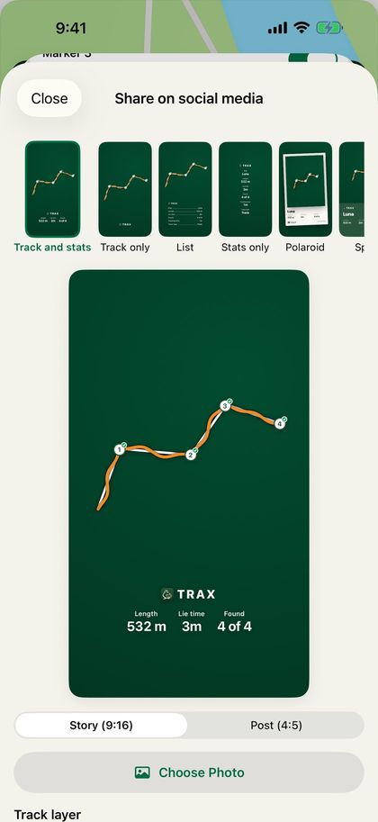
For article search, the image shows the edge of the field and the articles without a track, and “Size” instead of “Length”. The stickers then have one colour choice, “Area”. For area search, the image also shows your route and the dog’s track from the GPS collar if you have added it, and you choose the colour for “Area”, “Dog” and “Handler”.
If you used your own photo, Trax asks “Save the image with the track?” when you are done. Choose “Save” and a small picture of it sits at the top right of the map in the track overview. Tap it to see the image, and “Map” to go back. Tap the image to see it full size. Under “Image” you can share it again or remove it from the track. The image is included in the backup.
Tip: In an Instagram Story you can use the track as a sticker: tap “Copy sticker”, open an Instagram Story, pick a photo and paste. You can move and resize the sticker. “Polaroid” and “Split” cannot be copied as a sticker.
Important: Sharing does not save the track. Remember to tap “Save track” afterwards.
25
Sharing and receiving tracks
The track layer and the handler do not need to use the same phone. The track layer sends the track as a Trax file.
- When the track is laid, the track layer taps “Export” › “To another Trax user”, or the share button at the top of the track overview.
- Send the file with AirDrop or email. AirDrop works best, because the track then opens directly in Trax on the receiving phone.
- From email or Files, the recipient taps the file. A preview shows the map, length, number of items and surface. Tap the share button and choose Trax.
- Trax shows “Track received” with the length and number of items. Choose “Walk track now” or “Save for later”. “Cancel” closes without importing.
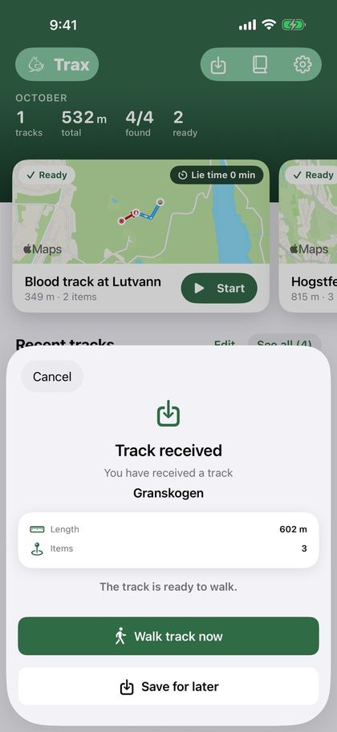
Important: Do not send the track with Messages. If the message goes as SMS instead of iMessage, the file does not arrive, and it is hard to tell in advance which it will be.
If the handler should not see the track before walking it, choose “To another Trax user, blind”. You find it in the “Save track” sheet and under the share button in the track overview before the track is walked. The recipient only sees the start, a green drop with an orange paw, not the route, the items or how many items there are. The track overview shows the card “This track was sent blind”, and “Walk blind” is on when the track is started. Tap “Show track” if you want to see the whole track anyway.
Tip: A blind track is hidden in Trax, but the file is not encrypted. Older versions of Trax and other map apps can show the whole track.
The file contains the track layer’s route, the items with their descriptions, the surface, the track type, the cross tracks and everything that belongs to a blood track. If the track has already been walked, the dog’s route and the assessment are included too, and the recipient only gets the choice “Save”. The track is then listed under “Completed tracks”.
You can also tap “Import track” under Settings › Tracks and data and choose a file from the Files app. GPX files from other apps and GPS devices work too. Choose “GPX (other apps)” when you want to open the track in another map app.
If you open a Trax or GPX file with a track that is already in Trax, the app asks “Track already saved”. Choose “Save as new track”, “Open saved track” or “Cancel”.
Does the track layer not have an iPhone? Then the track can be laid in any GPS app that saves GPX files. The track layer saves a waypoint where each item is placed, exports the track as GPX and sends the file by email. You tap the file and choose Trax, just as with a Trax file.
The waypoints become items, with the name as the description, and you get an alert when the dog comes close to them. Items cannot be added in Trax afterwards, so if the file has no waypoints, the track arrives without items. Send one track per file. If the file has two tracks, Trax reads the second one as the dog’s route.
The track gets the “Exported” badge only when the sharing is completed, whether you share a Trax file, GPX or PDF. If you cancel the share sheet, it is not marked.
Tip: Want a shared archive for your training group? Create a folder in iCloud Drive in the Files app and share it with the group. Choose “Save to Files” when you export a track, and put the Trax file in the shared folder. The others tap the file in the folder and open it in Trax, just as from email.
26
PDF report
In the track overview, tap the share button at the top, choose “PDF (multiple)” and select one or more completed tracks. You get one PDF with one track per page, oldest first, with the map, key figures, items, finds, surface, assessment and weather, ready to send or print.
The key figures also include the track type, corners, “Within X m of the track” and “Lost the track”, and the walk is coloured by deviation on the map, using the limit you chose in the track overview (see “Deviation from track”). Blood tracks also have the blood amount, tracking shoe/hoof and the blood stops. Each item is listed with its coordinate in the format you chose under Settings › Map and tracks, and how accurate the GPS was when the item was dropped, for example “±4 m accuracy”. Older tracks did not save the accuracy, and then it says “accuracy unknown”.
For all the tracks of one dog, tap the paw on the home screen, then the document button at the top right of the dog page. Choose the dog, turn on “Choose period” if you only want the tracks between two dates, and tap “Create PDF” at the bottom. The PDF gets a cover page with a summary, the average rating and a list of the tracks, followed by one page per track. The tracks in the report get the “Exported” badge.
Tip: The PDF report works well as a training log or to show your instructor.
27
Dogs
Register the dogs you train with, so you can see which dog walked each track.
- Go to Settings › My dogs, or tap ⋯ on the dog page.
- Tap “Add dog” and enter the name.
- Tap “Save”.
You can also add a dog where you choose the dog: tap “New dog…” at the end of the dog buttons before you start walking a track, or under “Laid for dog” in the “Save track” sheet, or in the menu when you tap the dog badge in the track overview. Enter the name and tap “Save”, and the dog is added to the list and chosen right away. If you have no dogs yet, “Add dog” opens the same name field.
Once you have registered dogs, you choose the dog when you start walking a track. The track layer can choose who the track is laid for (see “Saving the track”), and then that dog is chosen for you. If you only have one dog, it is chosen for you. The dog is shown in the track overview and in the PDF report.
You can change the dog afterwards in the track overview. On the “Completed tracks” page (tap “See all” on the home screen) you can show the tracks of one dog at a time with the buttons at the top.
The dog page: Tap the paw at the top of the home screen. If you have several dogs, choose the dog with the buttons at the top. If the dog has walked several track types, choose the type below, and if the IGP tracks were laid for several levels, level buttons appear too. At the top it says how many tracks the dog has walked and when the last track was.
Below are four key figures: “tracks in total”, “last 30 days”, “items found” and “on track” (the average share of each track that was within the deviation limit), followed by the boxes “Goals”, “Training elements” and “Progress”. At the bottom, “See …’s tracks” opens the “Completed tracks” page with the dog and track type chosen. The document button at the top creates a PDF for the dog (see “PDF report”), and ⋯ has “Add dog” and “My dogs”.
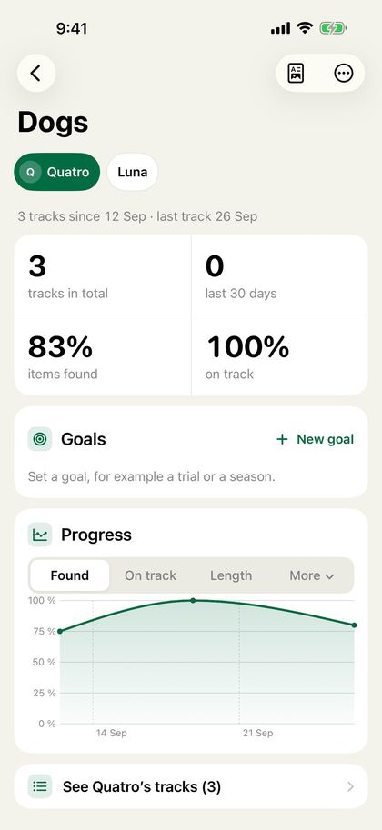
“Progress” is a chart of the dog’s completed tracks over time. Choose what the chart shows: “Found”, “On track” or “Length”, or under “More”: “Track age” (lie time), “Rating”, “Blood” (blood amount per 100 metres, when the dog has at least two blood tracks with a blood amount) or “Food” (the food on IGP tracks, when the dog has at least two IGP tracks with food set). The chart appears once the dog has at least two tracks. If the tracks lack the value you chose, it says there are too few tracks to show a chart.
“Working time” under “More” shows how long the dog spent on the IGP tracks, when the dog has at least two IGP tracks. If the IGP tracks were laid for different levels, separate level buttons appear below the track types, for example “All levels”, “IGP 1” and “IGP 2”. Choose one level, and the figures and the chart show only tracks laid for that level, so you compare like with like. With one level chosen, “Working time” shows a dashed line for the maximum working time at that level, and tracks above the line get an orange point. The FH levels have no line.
If you choose “Article search” or “Area search”, the dog page shows “Count” instead of “tracks in total”, and not “on track” or goals. The chart for searches appears once the dog has at least two searches. Searches are never counted in the statistics for tracks.
Goals: The “Goals” box on the dog page shows the goals with progress bars. Tap “New goal” to create one. Under “All tracks” you see all the goals, with the track type as a tag. If you choose a track type, you only see the goals for it, and the button is called, for example, “New IGP goal”, with the track type already chosen. If the dog has no tracks yet, the dog page shows just the goals. You can also add goals under Settings › My dogs: tap “…” next to the dog and choose “Goals”.
- “Name”: for example trial or Season 2027.
- “Deadline”: “Date” (tracks from today until the date count, for example leading up to a trial) or “Period” (tracks between two dates count, for example a season).
- “Track type”: “All tracks”, or only tracks, IGP tracks or blood tracks.
- “Requirements”: one or more of “Length”, “Lie time”, “Number of tracks”, “Found” and “On track”. Searches never count.
By default each requirement can be met on a separate track: length and lie time are the best track in the period, and “On track” is the average of all the tracks. If the goal has at least two of length, lie time, found and on track, you can turn on “All requirements on the same track”. Then the goal is only reached when one track meets all the requirements at once, and the goal shows “Closest: the track from …” or “Reached on the track from …”. “Number of tracks” always counts all tracks in the period.
Tip: Example: the goal is 1000 m, 2 hours lie time and 90 % on track. Without “All requirements on the same track”, the goal is reached when the dog has walked one track of 1000 m, another with 2 hours lie time, and has 90 % on track on average. With the switch on, it has to be one and the same track that is 1000 m, has lain for 2 hours and where you were 90 % on track.
Tap a goal to change or delete it. The goals are part of the backup.
If you delete a dog, its tracks keep the dog’s name. The dog is listed under Settings › My dogs › “Previous dogs” as long as it has tracks, and there you can turn off the switch to hide it from the dog filter. The tracks are still listed under “All”.
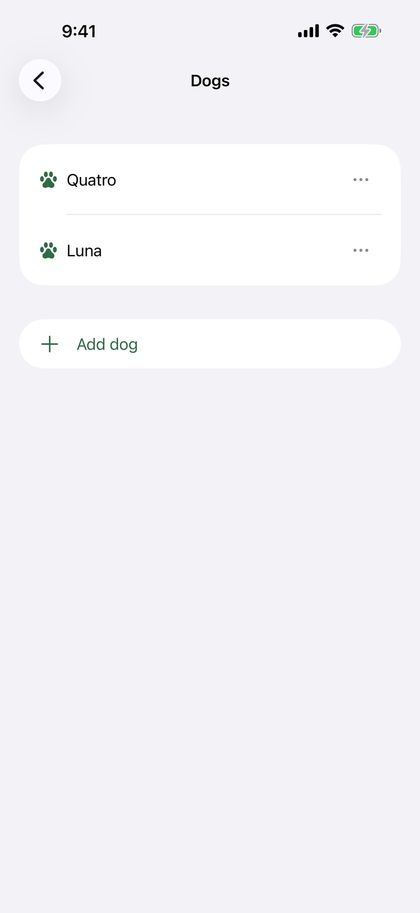
28
Settings
At the top of Settings is “My dogs”. Under “App” are Alerts, Map and tracks, Battery and Language. Under “Tracks and data” are “Import track”, which opens a track from a Trax or GPX file, for example a track someone has sent you, and Backup. Under “Help” are User manual and About Trax. Tap a row to open the page.
- Alerts: alerts for nearby items, blood stops and blood resuming, track loss and crossing tracks, IGP requirements and IGP template guidance while laying, reading out the distance walked, and the alert type with voice alerts. See “Alerts and voice alerts”.
- Map and tracks: choose the colour and icon of the item markers (number, pin, flag, paw or bag), “Track layer color” and “Handler color”. “Rotate map to my direction” turns the map to face the way you face while laying or walking a track; when it is off, north is always up. Here you also choose the coordinate format: decimal degrees (DD), UTM, degrees/minutes/seconds (DMS) or MGRS. Under “Finds” you turn on “Mark finds automatically” and choose the distance (see “Recording finds”). Under “IGP tracks” you choose the “Step length” (see “Track type and blood tracks”).
- Battery: “GPS battery saver” uses less power on long tracks. The track is slightly less detailed, but the proximity alert and “Found” work as before. While recording, the battery level is shown at the top, and the app warns you at 20 and 10 percent, also with the screen locked.
- Backup: automatic copy to iCloud Drive, and backups you create yourself. See “Backup and new phone”.
- My dogs: add, rename or delete dogs, and set goals for each dog (tap “…” next to the dog). Under “Previous dogs” you can hide deleted dogs from the dog filter.
- Language: choose “Phone language”, Norsk, English, Svenska or Deutsch. The new language is shown the next time Trax starts, so close the app completely and open it again. The widget always follows the phone’s language.
- About Trax: “Send feedback” opens an email to me with the app version, iOS version and phone model already filled in. Write your question, bug or wish at the top. “Write a review” opens Trax in the App Store, where you can give stars and write a review. “Privacy policy” opens the privacy policy on the Trax website.
Tip: Tap “?” next to a section to see an explanation of its settings. Tap again to hide it.
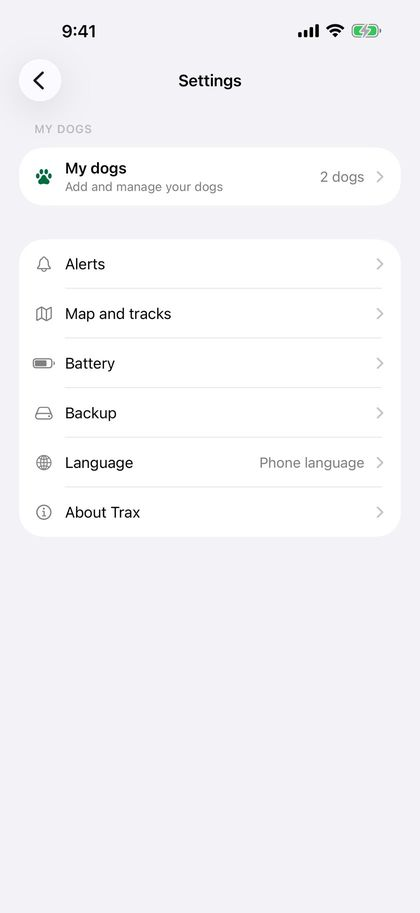
29
Backup and new phone
Keep your tracks safe if you lose your phone or switch to a new one.
“Automatic Copy to iCloud Drive” under Settings › Backup is on by default. Trax then puts a backup in the “Trax” folder in your own iCloud Drive a few seconds after a track or a dog is saved or changed, so you don’t have to remember it. While a track is in progress, Trax waits until the track is saved. Below the switch it says when the last copy was made, or that iCloud Drive is off on the phone.
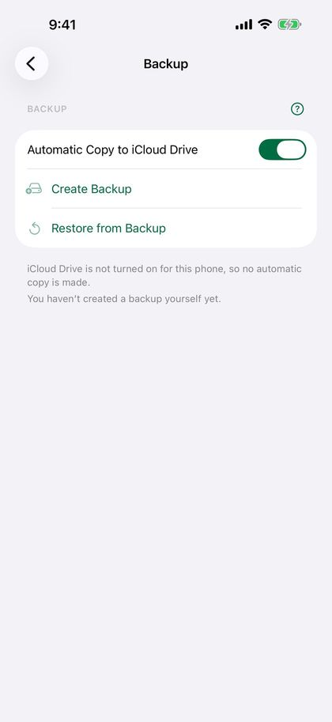
You can also make a backup yourself with “Create Backup”. You get one file (.traxbackup) with all tracks and dogs, which you can save in Files or iCloud Drive, or send to yourself. Below the buttons it says when you last made one.
- New phone, or Trax installed again: Trax asks once whether to get your tracks from iCloud Drive. Choose “Restore”.
- If you have a backup you made yourself, tap the file (it opens in Trax), or choose “Restore from Backup” under Settings › Backup.
- Trax shows how many tracks and dogs the backup has, and asks before anything is added.
Restoring only adds tracks and dogs that are missing. Nothing is deleted or overwritten. A dog with the same name as a dog on the phone becomes the same dog. Everything happens on the phone and in your own iCloud Drive, without an account.
30
Deleting and recovering tracks
Swipe a track to the left on the home screen or on the “Completed tracks” page to delete it. You can also open a track, tap ⋯ at the top and choose “Delete track”. You are always asked before anything is deleted.
Important: Deleted tracks cannot be recovered unless they are in a backup. Export the track as GPX or PDF first if you want to keep it.
If the app stops in the middle of laying a track, for example because the phone ran out of battery, the track has been saved along the way. The next time you open Trax, “Unfinished track” is shown at the top. Choose “Continue” to keep laying, “Finish” to save the track as it is, or “Delete”.
If the app stops in the middle of a walk, the track is listed under “Ready to walk” with “Walk in progress”. Open it and tap “Continue” to continue from pause. If you would rather start over, tap the back arrow and “Discard dog track”.
31
Tips and troubleshooting
- The track is jagged or has gaps: check that Trax has location access and that “Precise Location” is on.
- GPS is less precise in dense forest, in steep valleys and between tall buildings. Wait until the position has settled before you tap “Start”.
- Low Power Mode can give fewer GPS points. Charge the phone before long tracks, or turn on “GPS battery saver” under Settings › Battery.
- Not seeing the track on the lock screen? Check that Live Activities are turned on under Settings › Trax on your iPhone.
- Not getting the notification that the lie time is up? Check that notifications are on for Trax under Settings › Trax › Notifications on your iPhone, and turn on “Time Sensitive Notifications” if you use Focus.
- Not hearing the voice alerts? Check that “Alerts” and “Read alerts aloud” are on under Settings › Alerts › Alert type, and that the volume is up. Tap “Play example” to test.
- Not receiving the track? Send it with AirDrop or email, not Messages. Check that the file name ends in .trax or .gpx, and try “Import track” in Settings.
- Questions or problems? Tap “Send feedback” under Settings › About Trax, or send an email to post@trax-dogtracking.no.
32
Privacy
All tracks are stored on your phone. Trax has no account and no server of its own. If you use iCloud Drive, Trax puts a backup in the “Trax” folder in your own iCloud Drive. You can turn this off under Settings › Backup. Your tracks are shared only when you export them yourself.
The image for social media is created on your phone. If you choose “Save Image”, iOS asks whether Trax may add photos to Photos. Trax can only add photos, not see your photos. If you choose your own photo to put the track on, Trax only sees the one photo you pick.
To fetch the weather, the position and time where the track started, and where the dog started the track, are sent to Apple Weather. Apple does not link the request to you or your Apple Account, and no training data is sent.
When you stop a track, the starting point is sent to the Norwegian Mapping Authority’s place name service (Kartverket) when you are in Norway, and to Apple elsewhere, to find the place name used in the track’s name. No training data is sent, and the place name is only stored as the name of the track. Without a connection, the name is the date and time.
You find the full privacy policy under Settings › About Trax › Privacy policy.